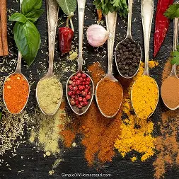
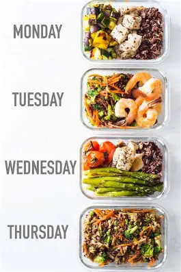

FlavorArchive Blog
Tips, guides, and inspiration to help you become a better cook.

Essential Knife Skills for Beginners
Learning how to chop, slice, and dice safely is the first step to enjoying cooking. Here are three simple techniques to start with.
Read More →
Your Guide to Basic Kitchen Spices
Don't know the difference between paprika and chili powder? We break down the top 10 spices every home cook should own and how to use them.
Read More →
Simple Meal Prep Ideas for Busy Weeks
Save time and money by preparing your meals in advance. We show you the easiest recipes that are great for leftovers.
Read More →